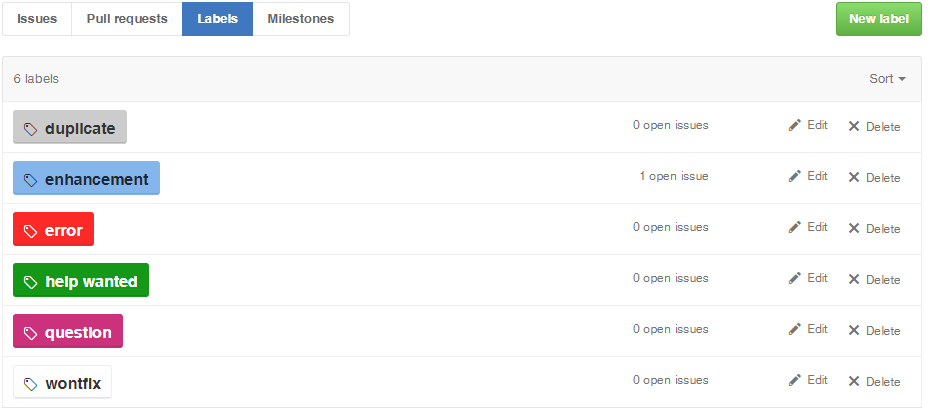
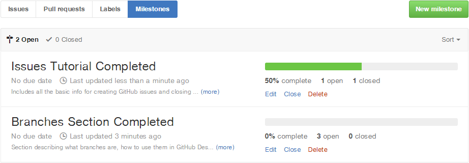

GitHub Issues
One of GitHub's most useful features for planning work and tracking progress is Issues. Each issue you create for a repo is a little note with a description of work to be done and, optionally, information about what kind of work it is, who is assigned to that task, and what project milestone it is a part of.
When you first view the Issues screen, you'll see an empty box where all of your issues will go. Along the top are options you can use later to filter and search through your issues. There's also the bright green New issue button, which we're going to use next.

Creating Your First Issue
To demonstrate how Issues work, I'm going to create new Issues for the rest of this guide. After clicking the New Issue button, we'll start creating our first GitHub Issue!

New Issues take five kinds of information. The most important two are the name and the description. Much like a commit, you give an Issue a short and informative name and then an optional longer, more detailed description.
The other three types of information an Issue can have are Labels, Milestones, and Assignees.
Labels
Labels are informative tags that describe what kind of an issue this is. I've tagged our example with the enhancement label, because the work that satisfies this issue would constitute an enhancement to the project. Each repo has several default Labels, but you can edit them, delete them, and create your own. An issue can have multiple Labels.

Milestones
Milestones are large strategic project goals. You can optionally create project Milestones and assign issues to them. The Milestones view will let you see each of these larger goals and your progress toward completing them based on how many of the issues assigned to that Milestone have been closed.

Assignees
Assignees are the people who are collaborators on your project who have been assigned this Issue. This lets you designate who is working on what.
Submit the Issue
You don't need to use Labels, Milestones, or Assignees, but they are helpful for larger projects to keep track of things. Once you're happy with the Issue you've created, go ahead and click the green button Submit new issue